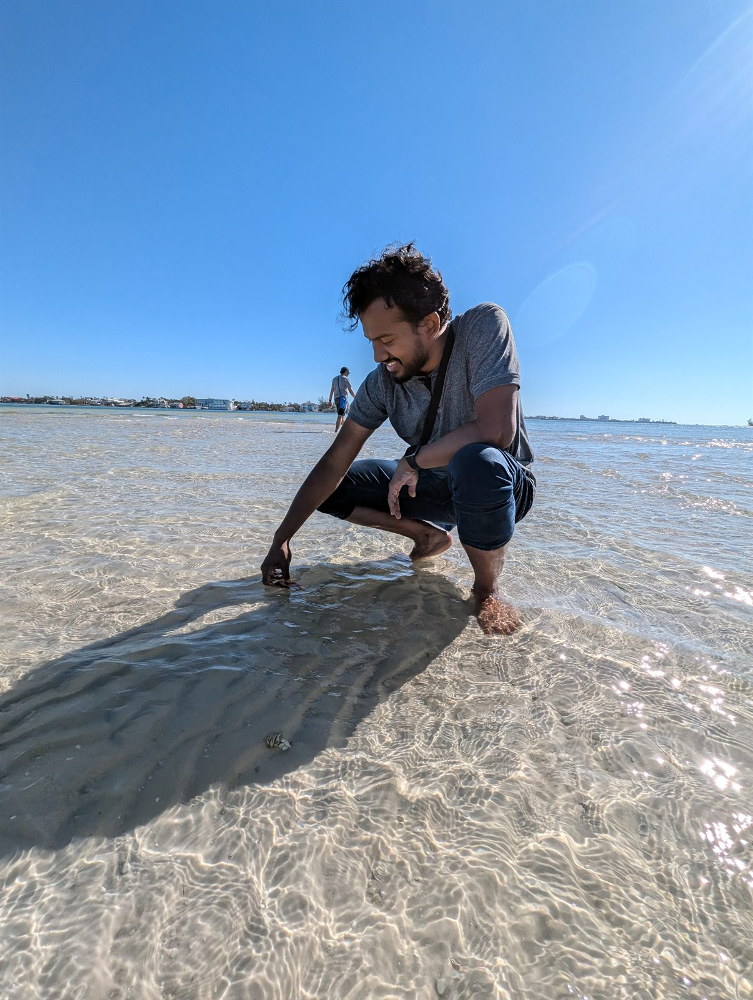

Evolutionary behavioural ecologist
Pratush Brahma, PhD
At the University of Florida, I study how animals make decisions that maximise their fitness and how the best decision shifts as the conditions around them change.
In the invasive African jewelfish, I build dynamic state variable models (a stochastic dynamic programming approach) to predict those decisions across changing population densities, then project them forward into population-level outcomes. In jumping spiders, I test empirically whether the sensory information those models assume, like colour vision, is actually used to decide. My work runs from Florida waterways to the Western Ghats of India.

Field Systems
Five organisms, one recurring question.
A career moves through habitats: explore the landscape.
The central finding: jewelfish
One might expect crowded conditions to force animals to economise on energy, investing less in costly parental care as food grows scarce. My models of male jewelfish show something else: at high density, mating opportunities arrive so often that the real cost of the 14 timesteps spent caring for young is not the energy it demands but every encounter passed up while occupied. Time, not energy, becomes the binding constraint. In females, the underlying driver is different: decisions track the net fitness benefit of each option directly, and females grow choosier about mating with caring males as density rises, even when that tactic is not the one initially preferred.
Projected forward into population growth, these individual decisions carry real demographic consequences: a population locked into a “low-density” behavioural strategy collapses (0% adult survival) if it ever meets high-density conditions, a real risk for species recovering from decline. In contrast, a population locked into a “high-density” strategy performs almost as well as one that adapts perfectly, because its high fecundity leaves little time to pay for being mismatched. That asymmetry suggests a testable hypothesis: successful invaders may not need to be behaviourally flexible at all.